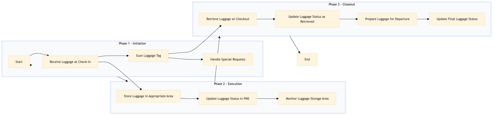

| Role | Steps |
|---|---|
| Front Desk Agent | 1.1 1.2 1.3 3.1 3.2 3.3 3.4 |
| Housekeeping Staff | 2.1 2.2 2.3 |
| Concierge | 1.3 |
| Step | Name | Role | System | Input | Output | KPI | Dec? | Exc? | Pain Point / Risk |
|---|---|---|---|---|---|---|---|---|---|
| 1.1 | Receive Luggage at Check-In | Front Desk Agent | Oracle OPERA Cloud | Guest luggage | Luggage tag with guest information | Less than 3 minutes per piece of luggage | N | Y | Handling heavy or fragile items |
| 1.2 | Scan Luggage Tag | Front Desk Agent | Oracle OPERA Cloud | Luggage tag | Updated guest profile with luggage information | Less than 1 minute per scan | N | Y | Barcode scanner malfunctions |
| 2.1 | Store Luggage in Appropriate Area | Housekeeping Staff | Oracle OPERA Cloud | Luggage tag information | Stored luggage in designated area | Less than 5 minutes per piece of luggage | N | Y | Limited storage space |
| 2.2 | Update Luggage Status in PMS | Housekeeping Staff | Oracle OPERA Cloud | Luggage location information | Updated PMS record | Less than 2 minutes per update | N | Y | System connectivity issues |
| 3.1 | Retrieve Luggage at Checkout | Front Desk Agent | Oracle OPERA Cloud | Guest request for luggage retrieval | Delivered luggage to guest | Less than 5 minutes per piece of luggage | N | Y | Incorrect luggage location |
| 3.2 | Update Luggage Status as Retrieved | Front Desk Agent | Oracle OPERA Cloud | Confirmation of luggage retrieval | Updated PMS record | Less than 1 minute per update | N | Y | System connectivity issues |
| 2.3 | Monitor Luggage Storage Area | Housekeeping Staff | Oracle OPERA Cloud | Real-time monitoring data | No action required if all is well, otherwise initiate corrective actions | Continuous monitoring | Y | N | Overcrowded storage areas |
| 1.3 | Handle Special Requests | Concierge | Oracle OPERA Cloud | Guest special requests for luggage handling | Action taken based on request | Less than 10 minutes per request | Y | Y | Complex or unusual requests |
| 3.3 | Prepare Luggage for Departure | Front Desk Agent | Oracle OPERA Cloud | Guest departure information | Luggage prepared and ready for transport | Less than 5 minutes per piece of luggage | N | Y | Late checkouts |
| 3.4 | Update Final Luggage Status | Front Desk Agent | Oracle OPERA Cloud | Final luggage status information | Updated PMS record | Less than 2 minutes per update | N | Y | System connectivity issues |
This process outlines the handling and storage of luggage at a full-service Marriott hotel using Oracle OPERA Cloud PMS. It ensures efficient management of guest luggage from check-in to departure.